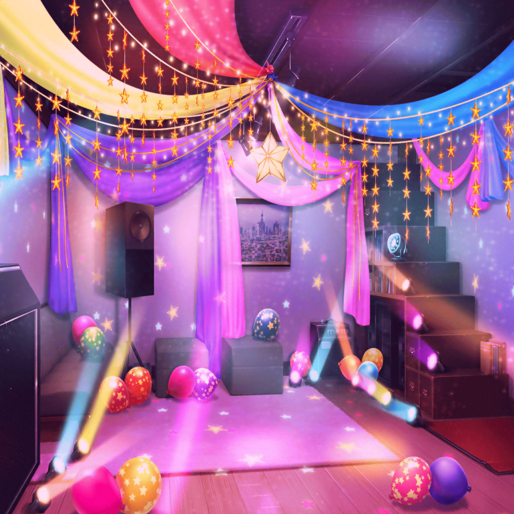
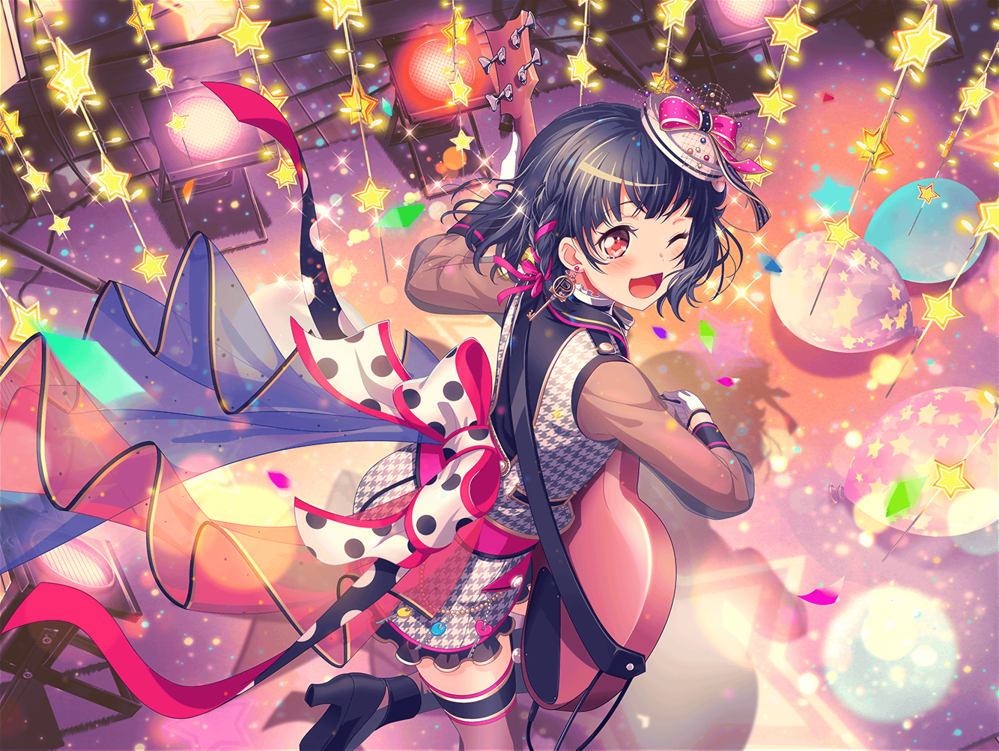

テスト最終日
市ヶ谷家 蔵
香澄
じゃーん！
衣装も着替えたし、今日のクライブ、気合い入れていこうね！
有咲
照明もこだわった甲斐があったな。
お客さん、結構驚いてくれてるぞ。
つーかこうなると、さすがにうちの蔵じゃないみてーだな
りみ
ん、香澄ちゃん？
今日はいつもと髪型が違う……よね？
香澄
うん！
今日は特別な日だから、ちょっとだけイメチェンしてみたんだ！
香澄
えへへ、いいでしょ～！
有咲
は、はぁ？ な、なんで私に話を振るんだよ？
ま、まあ……いいんじゃねーの？
香澄
やったー♪
有咲に褒めてもらっちゃったー
有咲
べ、別に褒めてねーしっ！
て、てか……そろそろ時間かな……？
……ぼちぼち始めるか？
沙綾
そうだね、行こう！
香澄
……あ、その前に！
みんな円陣組んでいつものやつ、やろうよ！
有咲
ま、マジか……
ああいうのは楽屋とか舞台袖でやるんじゃねーのか？
ここだと完全にお客さんの前だぞ……
香澄
いいじゃん、やろうよ～！
みんなもうちょっと待っててね！ 今、大事な儀式やるからっ！
それじゃあ、みんな……はい！ 手をつないで！
沙綾・りみ・たえ
うん！
香澄
有咲も早く！
ここに入ってよ！
有咲
……こ、これでいいか？
香澄
……うん！
今、みんなの気持ち……ちゃんと伝わってるよ！
香澄
それじゃあ行こう！
一同
ポピパ！ ピポパ！ ポピパパ！ ピポパー！
香澄
（今、この瞬間……
私、みんなと一緒にここにいる。
みんなの気持ち、ちゃんと伝わってる――）
香澄
（私は、ポピパが――）

りみ
（大好き！）
たえ
（大好き！）

沙綾
（大好き！）
有咲
（大好き！）
香澄
（大好き！！！）
一同
（大好き！！！）

翌日
花咲川女子学園 中庭
香澄
昨日のクライブ、ホントにサイコーだったね～！
なんたって私達が初めて音を合わせた、原点の場所だもん！
今の私達にぴったりの場所だったよね！
りみ
うん！
お客さんもみんな喜んでくれたし、ホントに楽しかったなー
たえ
アンコールも２回かかったし、
りみの新曲、ホントに盛り上がったね
沙綾
私さ、前のクライブの時は、お客さんだったから、
演奏するの初めてだったんだ。すっごい興奮しちゃった。
あぁ～、またクライブやりたいなー
有咲
はぁ！？ 二度とクライブはねーって！
つーか、しばらくライブは勘弁してくれって感じだし
担任
あ、市ヶ谷さん。ここにいたの。
お昼休み中にごめんね
有咲
あ、先生！
担任
テストの採点が終わったから、一応知らせておこうと思って。
ちょっとこっち、来てくれる？
有咲
は、はい……っ
香澄
……ど、どうだったのかな？ 有咲……
大丈夫かな？
沙綾
この前の有咲の自信満々な顔見たでしょ？
絶対、大丈夫！ 有咲を信じよう！
たえ
なんかこっちまでちょっと緊張するね
りみ
わ、わかる……
私もすっごいドキドキしてきちゃった……
有咲
…………ただいま
香澄
……あ、有咲……っ！
テスト……どうだった……っ！？
有咲
ぐっ！
香澄
……ほ、ホントにっ！？
有咲
うん、ホントに。
しかも、過去最高得点……っ！
一同
やったーーーーーーーーーっ！！
有咲
ま、まあな、私が本気出せば？
こんなのチョロいっつーの
香澄
おめでとーーーー！ 有咲ぁ！
有咲
だ、抱きつくな……っ！ 喜びすぎだって……
け、けど、まー……
ありがと。いろいろ心配かけて悪かったな
担任
あ、そうだ、市ヶ谷さん。
昨日のライブ、とっても楽しかったよ。
先生まで招待してくれてありがとうね
担任
昨日のライブ、行けなかった子がたくさんいたらしいから
良かったら今度……学校でライブするのはどうかしら？
先生、応援するよ！
有咲
……は、はいっ！
も、もちろん……っ！
香澄
ははは！
有咲～、ライブはしばらく勘弁してくれって言ってたけど、
いきなりライブすることになっちゃったね♪
有咲
……ったく、ホントにしかたねーなー。
あそこまで言われちゃ、やるしかねーだろ……っ？
りみ
私は、また新曲作っちゃおうかな。
今度のことで、自分の曲の幅が広がった気がするんだ
沙綾
よ～し！
それじゃあ、学校でのライブに向けて、
今日も蔵で練習しよう！
たえ
それなら、しっかりお弁当食べて体力つけなきゃ。
あ、早くお弁当食べないと、お昼休み終わっちゃうよ
香澄
そうだね！
早く食べなきゃっ！
たえ
ねえ、有咲。
有咲の唐揚げとこのパセリ、交換しない？
有咲
唐揚げとパセリっ！？
正気か！？
……ったく……今日だけは、特別だぞ……？
たえ
やったー。
この恩は一生忘れないよ
香澄
あはは！ よかったね～、おたえ。
それじゃあ、みんな一緒に……
香澄・沙綾・りみ・たえ
いっただきまーす！
香澄
……あ！ 有咲っ！
今、いただきますって言ってなかった！
有咲
だからそれは勘弁してくれって～～～～っ！